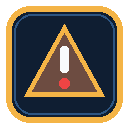

응급환자 운송 타이쿤
3D 도시 너비 우선 탐색(BFS) 관제 시스템
기본 BFS (무가중치 탐색)
STAGE 1
BFS 탐색 방문 노드
0 노드
중복 탐색 / 연산 지연
0 회
최단 경로 거리 / 예상 시간
- 칸 / -초
누적 환자 이송 완료
0 명
 중앙 병원 (이송지)
중앙 병원 (이송지) 응급 환자 호출
응급 환자 호출 경사 구역 (속도↓)
경사 구역 (속도↓)
정체 방해요소 (속도↓)
환자 이송 자금($)과 BFS 탐색 연구 데이터(RP)로 구급차 성능과 탐색 알고리즘을 고도화하세요.